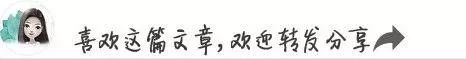

你是否也想在不确定的失业毕业后，搭建一条属于自己的被动收入通道？本文就是分享的实用经验，想搞的朋友拿来用就是，毕竟赚刀妹儿是多安逸的一件事情。
很多人提到副业，首先想到的就是去 TikTok、小红书卷流量、拍视频。但你有没有发现：这些平台的流量保鲜期极短，一条视频发出去 48 小时后基本就石沉大海，你必须不停地创作才能维持收入。
今天，我们要分享一套完全不同的“长效滚雪球”玩法：利用亚马逊联盟（Amazon Associates），结合 AI 一键建站和视觉搜索引擎 Pinterest。
这套方法最大的优势在于：你产出的每一条内容，在半年、一年甚至两年后，依然能持续为你带来精准的搜索流量和佣金。
下面，我们把这套 30 分钟的实操干货拆解为 5 个核心步骤，带你从零开始实操。
第一步：快速注册 Amazon Associates 避坑指南
首先，在浏览器中搜索 “Amazon Associates” 并免费注册。注册本身并不难，但博主特别提醒了几个极易导致封号或拿不到钱的隐形大坑：
绝对不要跳过“税收与收款信息”：很多人图省事想以后再填，结果等真正产生销售时，账户会因为信息不全被卡住，甚至面临合规审核风险。
调低起付门槛：亚马逊默认的起付款是 100 美元。登录后台，将起付阈值（Minimum Payment Threshold）降到 10 美元，这样你就能更快拿到第一笔回头钱，极大地提升副业信心。
开启“一键通（One Link）”功能：这是 90% 的新手都会忽略的免费福利。开启后，如果加拿大、英国或日本的海外读者点击了你的美国亚马逊链接，系统会自动把他们重定向到他们本地的亚马逊，确保你不会漏掉任何一笔国际订单。
生成链接的正确姿势：登录后，亚马逊页面顶部会出现一个叫 Site Stripe 的工具条。当你找到想推广的产品时，点击它生成短链接（Short Link）。千万别用又长又杂的长链接，那看起来非常像钓鱼网站。
第二步：新手必看！防封号的四大底层铁律
很多新手刚赚到几十刀，账号突然就被亚马逊封禁了，原因就是踩了以下红线：
180 天“生死时速”：注册成功的瞬间，6 个月的倒计时就开始了。你必须在 180 天内产生至少 3 笔真实交易，否则账号会被自动注销。因此，千万不要在还没准备好做内容前盲目注册！
严禁亲友刷单：不要指望让爸妈或朋友帮你买三单来混过新手期。亚马逊拥有极其强大的大数据关联技术（包括 IP 地址、购买历史、账号关联等）。一旦检测到熟人购买，不仅不算数，账号还会直接报废。前三单必须来自素未谋面的陌生人。
禁止离线传播链接：亚马逊规定推广链接必须是“公开且可追踪的”。你不能把链接塞进私域 Email、PDF 电子书、私人微信群或加密的社群里。
绝对不要“套壳缩链”：必须使用 Site Stripe 原生生成的短链接，禁止再使用 Bit.ly、Pretty Links 等第三方缩链工具进行二次伪装。
第三步：如何挑选一个能赚钱的垂直利基（Niche）？
做联盟营销，最忌讳的是“什么都想卖”。
“垂直内容吸引买家，泛内容只吸引游客。”
怎么判断你的利基市场够不够垂直？这里有一个 “5% 原则”：如果你选的这个主题，在日常生活中只适用于少于 5% 的人群，那它就是一个足够精准的利基。
正面例子：德牧犬训练装备、极简露营美学、面包酸种发酵、Vanlife（房车生活）。
它的受众可能没那么多，但在这个圈子里的人极为垂直、有极强的消费热情和明确的购买意向，转化率极高。
此外，不要只看佣金比例，要看客单价。 比如美妆类佣金高达 10%，但一支口红只要 20 刀；电脑配件佣金只有 2.5%，但一台组装机要 1200 刀。一单 2.5% 的佣金（30 刀）其实远比一单 10% 的美妆赚得多。
第四步：用 AI 工具，几分钟搭建专业级导购网站
为什么我们需要一个网站，而不是直接把链接发在社交平台上？
聚合信任感：一个精美的测评网站能极大地提高读者的购买信赖。
合规避险：直接在很多平台发亚马逊硬广链接容易被限流，但引导读者去你的测评博客看文章则是完全合规的。
视频中，博主推荐使用 AI 建站工具（如 Hostinger Horizons），只需输入一句大白话（Prompt），AI 就能在几分钟内生成包含：精美产品卡片、直观的“View on Amazon”购买按钮、响应式移动端适配、以及多篇自动排版好的 SEO 博客文章的专业网站。
你只需要去亚马逊复制 Site Stripe 短链接，然后在 AI 对话框里说：“把这个链接绑定到特定产品的 View on Amazon 按钮上”，建站就完成了，全程不需要懂任何一行代码。
第五步：终极流量密码——Pinterest 视觉搜索引流
建好了网站，我们要如何获取精准的买家流量？答案是：Pinterest。
千万不要以为 Pinterest 只是女生看婚礼策划和家装效果图的地方。Pinterest 本质上不是社交媒体，而是一个“视觉搜索引擎”。
人们上 TikTok 是为了打发时间（消遣模式），而人们上 Pinterest 则是带着明确的目的去搜：“500 刀以内最好的家用健身器材是什么”、“新手露营必备装备”。他们点开图片时，钱包就已经掏出一半了。
更重要的是，Pinterest 允许你直接在图片（Pin）上挂上跳转到你网站的链接！
🚀 实操引流三步走：
注册 Pinterest 商业版账户：完全免费，能让你看清每天哪些图片点击量最高。
用 ChatGPT 批量作图：利用 ChatGPT（或 Canva 模板）快速生成 1000x1500 像素的标准 Pinterest 长图，配上吸睛的文案。
SEO 标题与描述优化：不要写“看看我发现的超酷哑铃”，而是要写“100 美元以内最适合家用健身房的可调节哑铃深度测评”。把用户的搜索词精准地埋在标题和描述里。
只要你保持频率（建议每周发布 5 到 10 张图），这些图片就会像一个个辛勤工作的数字资产，在未来的几个月、甚至几年里，源源不断地把搜索流量精准引导到你的测评网站，进而转化成你的 passive income（被动收入）。
写在本文的最后
💡 今日行动指南（复盘清单）
注册 Amazon Associates 账号，填妥税收信息，将起付额调至 $10，开启 One Link。
明确你的 5% 垂直利基。
借助 AI 工具快速生成一个精美的测评/导购网站，填入你的专属联盟链接。
注册 Pinterest 商业号，利用 AI 工具开始批量做图并带上你的网站链接。
副业的本质在于积累。与其每天在红海平台里卷那 48 小时就过期的快餐流量，不如从今天开始，用 AI + 视觉搜索，给自己种下一颗能持续结果的“被动收入树”吧！
往期推荐
公众号百分百赚钱法，牛马搞副业起手式 善用 ChatGPT 打造多元收入：普通人也能用AI搞副业赚美元 不懂技术想搭建网站开启你的副业之旅，如何在fiverr上找老外帮你建站？ 开始搞副业赚美元，普通人最容易起步的亚马逊联盟先申请起来呗 什么是affiliate？为什么国外自由职业者喜欢affiliate？搞affiliate能赚多少美元？ 做跨境品牌设计，这个AI可以帮你快速找到英文字体 如果你还打算用wordpress建中文站，我还是推荐JustNews主题 这些年常用的注册com域名相对便宜的国外域名服务商 怎样通过fiverr affiliate赚美元？
- THE END -
作者来源：紫罗兰兮，一个追求躺赚的行动家，一个不停折腾网站的，并通过实际行动逐渐证明在网上赚得丰厚Dollar不是一件很难的事情，江湖人士网常驻编辑。
长按关注我，
带你一起赚！
点击阅读原文，关注江湖人士更多好文。